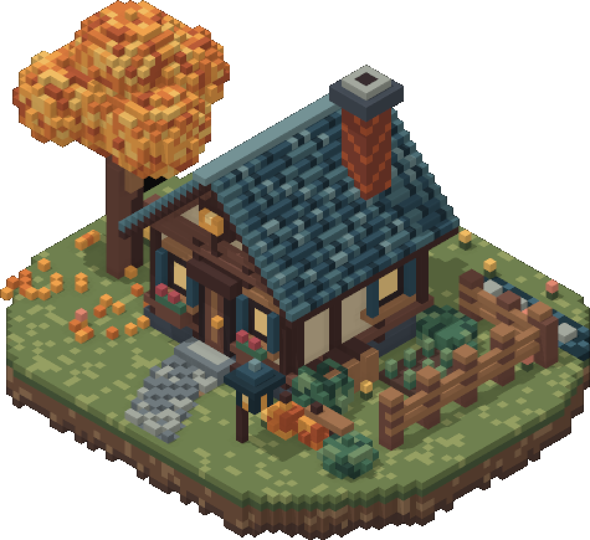

Every triangle accounted for.
Independent app studio. Currently building Quantum, a voxel editor made for AI agents.

Latest
Oct 26, 2026
How Quantum draws a cottage without drawing 333,804 triangles
Culling, greedy meshing, chunks, exact voxel shadows, and the bench that stops me lying to myself.
Read the post